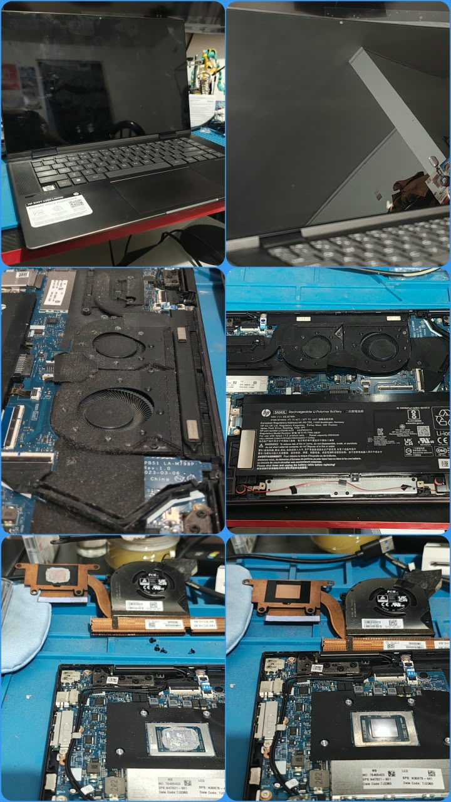
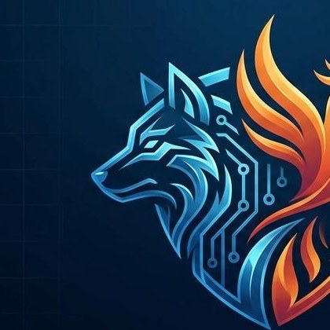
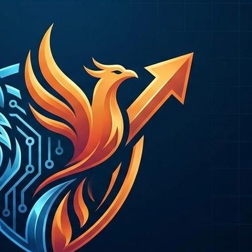
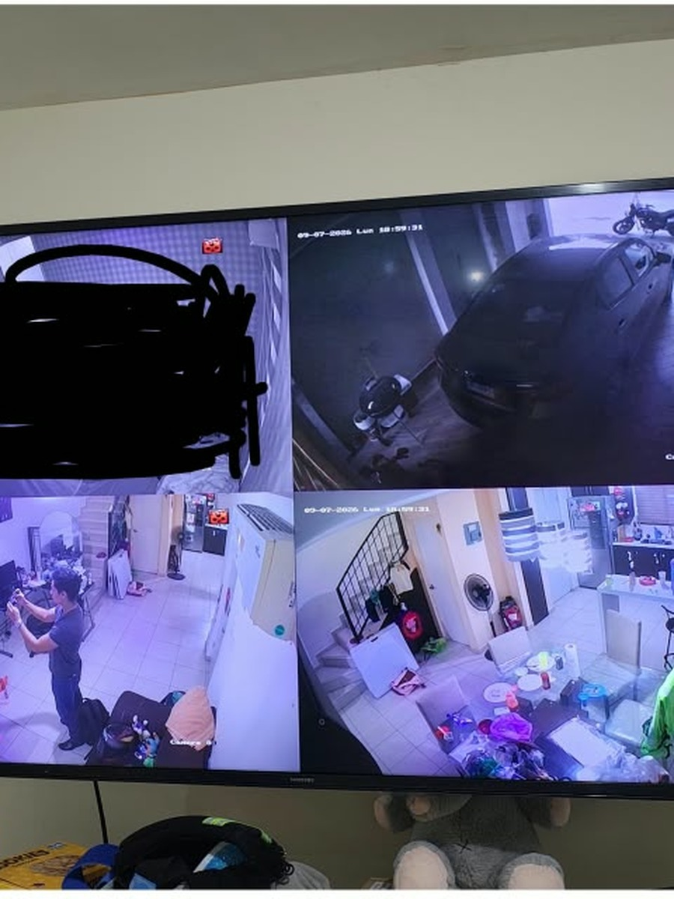
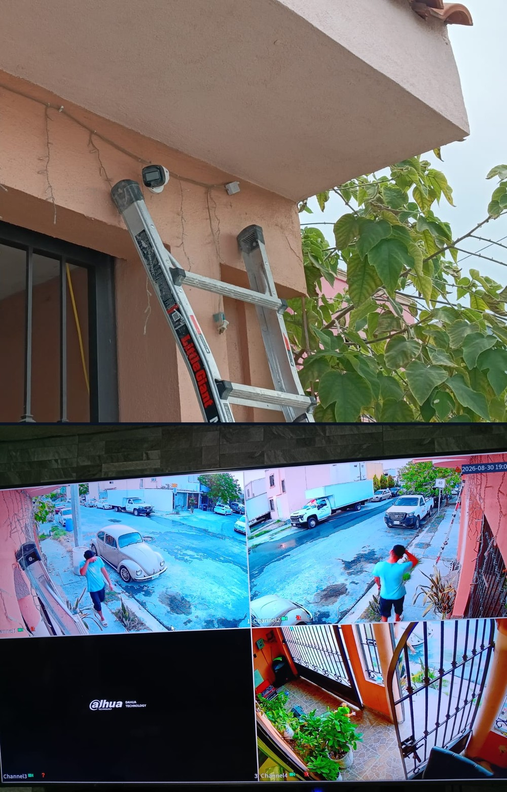
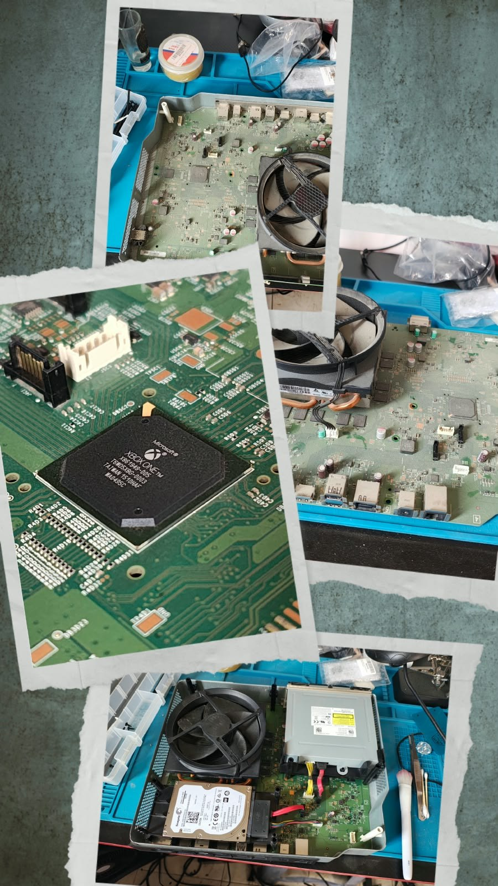
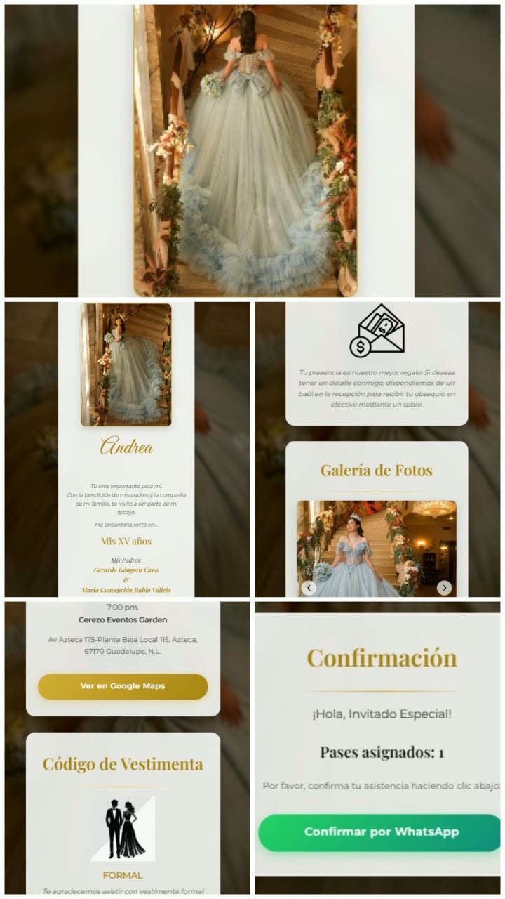

Mantenimiento · Equipo de cómputo
Laptop revivida: limpieza y optimización completa
Se calentaba de más y rendía poco. Limpieza interna, cambio de pasta térmica y optimización de software para que volviera a trabajar al 100%.
Tecnología integral · México · Expansión
En Monterrey y donde nos necesites, unimos la fuerza técnica del lobo con la innovación del fénix — para que tu tecnología, la de tu casa, tu negocio o tu empresa, nunca se detenga.
Acerca de Itzalo
Itzalo nace en mayo de 2026, en Monterrey, Nuevo León, de la mano del Ing. Erick Jair Coronel Rubio, para cubrir un vacío que veíamos todos los días: la falta de un aliado que domine con la misma destreza el hardware y el software — sin importar si quien lo necesita es una familia con una laptop que ya no enciende, o una empresa con un sistema que no puede fallar.
Fundada en Monterrey, N.L., para ser el aliado que resuelve tanto el fierro como el código — el mismo compromiso, sin importar el tamaño del proyecto.
Nuestro logo funde al lobo, que protege la infraestructura física, con el fénix, que renace en cada innovación de software.
"Garantizamos tu continuidad operativa"
En la sala de tu casa o en el centro de datos de tu empresa.
Sobre Itzalo
Misión
Proveer soluciones tecnológicas integrales —desde la laptop de un hogar hasta la infraestructura de una empresa— que garanticen la continuidad y el crecimiento de cada cliente que confía en nosotros, fusionando la robustez del soporte técnico y hardware con la innovación constante en desarrollo de software, bajo un mismo sello de ingeniería mexicana de clase mundial, sin importar el tamaño del proyecto.
Visión
Convertirnos en el aliado tecnológico de confianza para familias, negocios y corporativos en México y mercados internacionales, reconocidos por nuestra capacidad de evolucionar junto a la vanguardia digital y por convertir cada falla de sistema o reto de desarrollo en continuidad operativa para quien menos puede darse el lujo de detenerse.
Buscamos el renacer de las ideas, como el fénix, para ofrecer soluciones que no solo funcionen, sino que trasciendan.
Como el lobo, protegemos lo que cada cliente pone en nuestras manos — de la laptop de la casa a la infraestructura de la empresa.
Cada línea de código y cada reparación se basa en precisión técnica y ética profesional.
Creemos en el talento mexicano sin fronteras — visión global en cada proyecto local.
La tecnología cambia; nos mantenemos ágiles ante cualquier fallo de sistema o reto de desarrollo.
Dualidad tecnológica
Un mismo compromiso — que nada de lo tuyo se detenga, sea tu casa, tu negocio o tu empresa.

El lobo protege
Diagnóstico, mantenimiento preventivo y correctivo de laptops, PCs, servidores y estaciones de trabajo — de la computadora de tu casa a la sala de servidores de tu empresa.
Diseño, instalación y configuración de redes cableadas e inalámbricas robustas y seguras, en tu hogar o tu oficina.
Reparación a nivel componente y renovación de equipos que ya no rinden — como instalar Linux en una laptop que Windows dejó atrás — para alargarles la vida sin gastar en uno nuevo.
Instalación y configuración de videovigilancia para el patrimonio de tu casa o la seguridad de tu negocio.

El fénix innova
Sistemas y plataformas que automatizan procesos — el control de inventario de tu negocio o la operación completa de tu empresa.
Sitios y aplicaciones rápidas, responsivas y con buen diseño (UX/UI): tu página personal, la de tu negocio, o la app de tu empresa.
Conectamos tus herramientas y bases de datos para que la información fluya sin fricción.
Invitaciones digitales animadas para bodas, XV años y cumpleaños, hechas 100% a la medida en código.
Cómo trabajamos
Sin sorpresas ni letras chiquitas — sabes qué esperar en cada paso.
Cuéntanos qué pasa por WhatsApp — una laptop que no prende, una red lenta, una idea que quieres construir. Con foto o video si ayuda.
Evaluamos el problema, a distancia o en sitio, y te decimos qué tiene y qué costaría — antes de tocar nada.
En tu casa, tu oficina, o en taller si el equipo lo requiere — lobo o fénix, según lo que se trate.
Revisamos juntos que todo quede funcionando antes de dar el trabajo por cerrado.
Primeros trabajos
Trabajos reales que ya entregamos — con fotos de antes, durante y después. Nada inventado, nada de relleno.

Mantenimiento · Equipo de cómputo
Se calentaba de más y rendía poco. Limpieza interna, cambio de pasta térmica y optimización de software para que volviera a trabajar al 100%.

Soporte · Videovigilancia
Restablecimos la conexión del sistema de una vivienda y confirmamos en sitio la visualización correcta, en tiempo real, de las 4 cámaras.

Instalación · Seguridad
Montaje de cámaras exteriores e interiores y configuración del grabador NVR Dahua de 4 canales, con monitoreo remoto activo desde el primer día.

Mantenimiento · Consolas
Limpieza externa e interna de la consola y cambio de pasta térmica, para recuperar temperaturas normales de operación y silencio en los ventiladores.

Diseño digital · Invitaciones
Diseñamos y publicamos la invitación digital de sus XV años: foto y datos del evento, galería de fotos, código de vestimenta y confirmación de asistencia directo por WhatsApp.
¿Tienes un equipo, cámara o proyecto parecido? Así de directo trabajamos con él.
¿Por qué Itzalo?
Garantizada en cada trabajo, grande o pequeño.
Con experiencia real en campo, no solo en teoría.
Cada proyecto entregado es un caso que respalda al siguiente.
Sin importar si el proyecto es para tu casa o para tu empresa.
Preguntas frecuentes
Atendemos por igual a hogares, negocios y corporativos — la laptop de tu casa nos importa tanto como la red de una empresa. No hay proyecto "demasiado pequeño".
Servicio a domicilio y en sitio en Monterrey y su área metropolitana. Para desarrollo de software, sistemas y consultoría trabajamos de forma remota con clientes en cualquier parte.
Primero diagnosticamos — a distancia o en sitio — y te decimos exactamente qué tiene tu equipo y qué costaría resolverlo, antes de tocar nada.
Sí. Revisamos contigo que todo quede funcionando antes de dar el trabajo por cerrado, y si algo relacionado con la reparación vuelve a fallar, lo resolvemos sin costo adicional.
Depende del diagnóstico. Fallas comunes de hardware o software suelen resolverse el mismo día; instalaciones o proyectos de desarrollo más grandes te damos un tiempo estimado antes de empezar.
Ambos, con el mismo nivel de compromiso: reparación y mantenimiento de equipos — el lado lobo — y desarrollo de software, sitios web y sistemas a la medida — el lado fénix.
Escríbenos por WhatsApp — cuéntanos qué tienes enfrente, con foto o video si ayuda. De ahí seguimos el proceso de diagnóstico y cotización.
Hablemos
Cuéntanos qué tienes enfrente — un equipo que no prende, una red que hay que ordenar, o un sistema que tu negocio necesita.